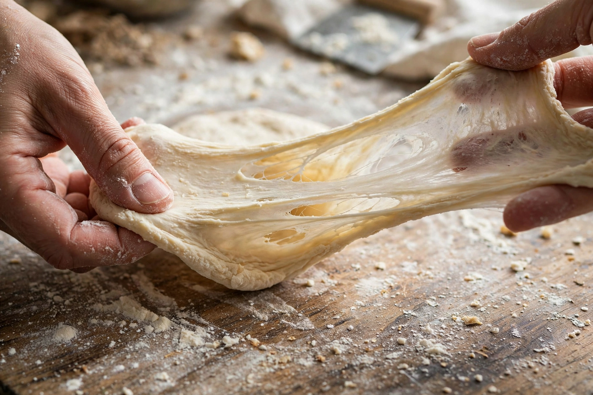

[Image placeholder: Elastic dough owes its stretch to the gluten network]**Gluten** is a family of structurally related proteins naturally found in certain cereal grains — chiefly wheat (where the proteins are gliadin and glutenin), barley and rye. When flour is mixed with water, gluten proteins form a sticky, elastic network that traps gas from yeast or bacteria, giving bread its chewy texture and rise; the word derives from Latin gluten, 'glue'.
Gluten can be washed out of dough as a rubbery mass (the origin of seitan, the wheat-meat of East Asian Buddhist cooking). It matters medically for people with Coeliac disease (an autoimmune reaction damaging the intestine), wheat allergy, and non-coeliac gluten sensitivity — and commercially to the large 'gluten-free' food market, though for most people gluten is a harmless, nutritious protein. Typical wheat flour is about 8–15% protein, most of it gluten. Vital wheat gluten is sold as an ingredient to strengthen doughs and make meat substitutes.
Kneading aligns and cross-links gluten strands; fats 'shorten' them (hence shortcrust), and strong bread flours are bred for high gluten. Sourdough fermentation partially breaks gluten down, which some people find easier to digest, though it does not make wheat safe for coeliacs.